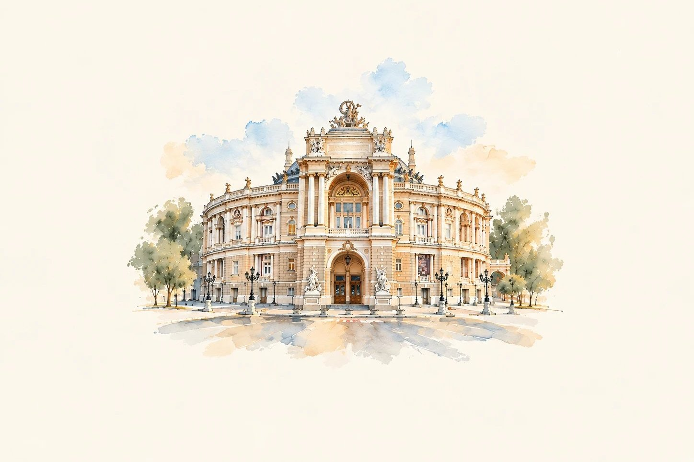

Light, sea and color — Odesa painting, 1930s–1980s

A small, privately held collection of Odesa painting — luminous color, free brushwork, and a deep attachment to the city's light and sea. Every work is documented, with provenance and certificates of authenticity.
The Odesa School brought together painters working between the 1930s and 1980s who shaped a distinct southern voice within the art of that period — luminous color, free brushwork, and a deep attachment to the city's light and sea. This gallery presents a small, curated selection of original works from that period, each available for private acquisition.